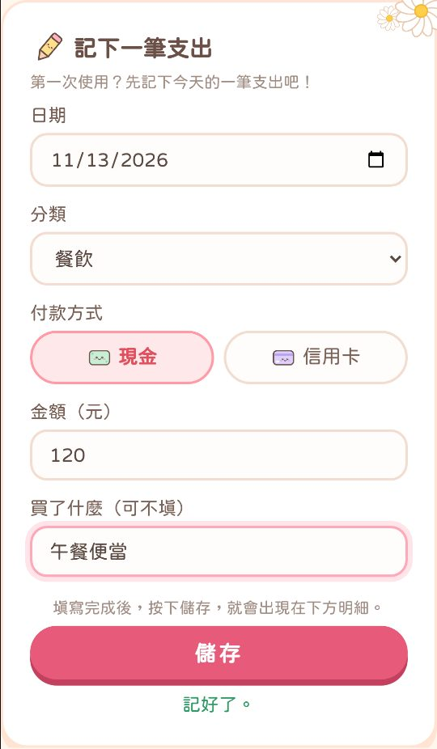
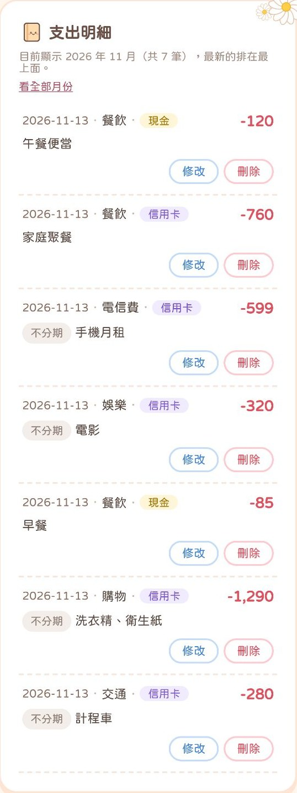
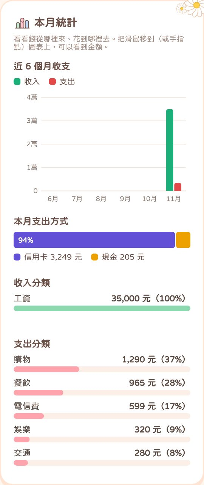
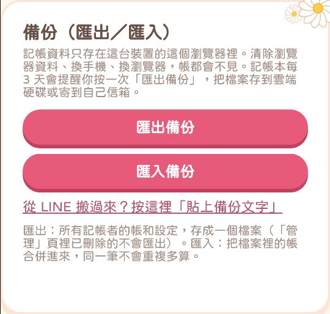

錢到底花去哪了？
打開手機就能記帳，不用下載 App、不用註冊。
記下每一筆，一眼看出這個月錢花最多的是哪一類。
月底一看存款，總是想不起來錢花到哪裡去？
以前想記帳
- 要先下載 App、註冊帳號
- 功能太多，不知道從哪開始
- 記了一堆，還是看不出錢花到哪
- 收支要交給別人的伺服器保管
用我的記帳本
- 打開瀏覽器就能記，不用註冊
- 選分類、填金額，一筆就記好
- 支出分類由多到少，一眼看懂
- 帳只存在自己手機，連我都看不到
【我的記帳本】把記帳變得很簡單：打開手機瀏覽器，記下一筆，記帳本就幫你整理好每個月的收支、花最多的分類，還會給你財務小提醒。
帳只存在你自己的手機裡，不會上傳到任何地方，連我都看不到。
一次買斷 NT$499，從今天開始知道錢花到哪裡去。
可以幫你做什麼
- 記收入、支出選分類、現金或信用卡，填金額就記好了
- 錢花到哪一目了然支出分類由多到少排好，看得出哪一類花最多
- 財務小提醒自動整理這個月存了多少、花最多的是哪一類
- 預算與存款目標每月預算用到 80% 會提醒你，超過會標示「已超支」
- 固定工資、分期付款每月固定收支自動記入，未來幾個月要繳多少分期一眼看到
- 可以增加記帳者每位記帳者的帳分開放，不會混在一起
- 隱藏金額一鍵把金額變成 ****，不怕旁邊的人看到
- 備份與還原每 3 天提醒備份；換手機時匯入備份就能找回來
實際畫面長這樣
下面都是記帳本的真實畫面，名字和金額是示範用的假資料。





價格
沒有訂閱、沒有額外收費
- 記收入、支出，支出分類一目了然
- 財務小提醒、每月預算、存款目標
- 固定工資、每月固定支出、分期付款自動記入
- 可以增加記帳者、隱藏金額
- 每 3 天備份提醒，換手機也能找回來
按下去會加入官方 LINE，私訊「我要購買」就可以了。
購買流程
- 點「立即購買」加官方 LINE私訊「我要購買」
- 依照 LINE 裡的說明付款付款方式會在 LINE 告訴你
- 收到記帳本網址和使用說明核對付款後，24 小時內在 LINE 傳給你
購買前請先注意
- 帳只存在你自己手機的瀏覽器裡，不會上傳到任何地方，我也看不到你的帳。
- 因為不上傳，所以換手機、清除瀏覽器資料，帳會不見。記帳本每 3 天會提醒你備份一次，備份檔要自己存到雲端硬碟或信箱。
- 沒有雲端同步，手機和電腦的帳不會自動同步。
- 沒有全部記帳者合計的畫面。
- 已在 iPhone（Safari）上完整測試；Android 目前還沒有完整測試。
- 需要網路才能打開。
- 請用 Safari 或 Chrome 打開，不要在 LINE 裡直接使用（LINE 裡記的帳跟瀏覽器是分開的）。
- 金額只能輸入整數（例如 120，不能輸入 120.5）。
- 「加入主畫面」還沒有測試過，建議用瀏覽器的書籤打開。
常見問題
點選問題，就會看到回答。
需要下載 App 嗎？手機、電腦都能用嗎？
不用下載 App，也不用註冊帳號。收到網址後，用手機或電腦的瀏覽器打開就能使用，建議用 Safari 或 Chrome。
手機和電腦的帳是分開的，不會自動同步。
帳會存在哪裡？你看得到我的帳嗎？
帳只存在你自己那台裝置的瀏覽器裡，不會上傳到任何地方，我看不到，也不會保存。
換手機的話，帳會不見嗎？
直接換的話會不見。換手機前，先到「管理」頁按「匯出備份」，把檔案存到雲端硬碟或寄到自己信箱；在新手機打開記帳本 →「管理」→「匯入備份」就能找回來。
在 LINE 裡點開可以用嗎？
建議不要。LINE 裡記的帳跟 Safari／Chrome 是分開的，換來換去帳會被拆成兩半。在 LINE 裡打開時，記帳本會跳出提醒，請選「用其他瀏覽器開啟」。
如果已經在 LINE 裡記了帳，可以在「管理」頁按「複製備份文字」，再到瀏覽器的「管理」頁按「貼上備份文字」搬過去。
一家人可以一起用嗎？
可以增加記帳者，每位記帳者的帳分開放。不過帳只存在這一台裝置裡，如果每個人用自己的手機，每支手機上會是各自獨立的記帳本。
可以分享給朋友嗎？
記帳本網址僅供購買者本人使用，請不要轉傳。
付款後多久會拿到網址？
付款完成後，請在官方 LINE 告訴我，核對後會在 24 小時內傳記帳本網址和使用說明給你。
Android 手機可以用嗎？
目前只在 iPhone（Safari）上完整測試過，Android 還沒有完整測試，可能會有沒發現的問題。
服務條款與相關政策
點選每個項目，就會展開詳細內容。
服務條款
「我的記帳本」為 NT$499 一次購買的線上數位工具。付款完成後，會在官方 LINE 提供記帳本網址與使用說明。
本商品不包含：雲端同步、一對一客製功能、理財建議。記帳本裡的「財務小提醒」是依照你記下的數字用固定規則計算出來的，不是 AI 分析，也不是專業理財建議。
記帳本網址僅供購買者本人使用，請勿轉售、公開散布，或用來製作相似的商品。
退款說明
本商品為線上數位商品，付款後即提供使用。
點選「立即購買」並完成付款，即視為你已閱讀並同意本說明及購買；交易完成後，恕不接受退款或取消訂單。
購買前請先看過本頁的「可以幫你做什麼」與「購買前請先注意」，確認符合你的需求再購買。
隱私權政策
記帳本本身不會收集你的姓名、電話等個人資料；你記的帳只存在你自己的裝置裡，我們看不到，也不會保存。
購買時你在官方 LINE 提供的資料，只用於核對訂單、交付商品與客服聯繫，核對完成後即刪除，不會轉售或提供給第三方。
客服聯絡資訊
官方 LINE 負責購買、網址領取與訂單問題，並非即時客服，會在 24 小時內回覆，請耐心等候：https://lin.ee/opTSS2X